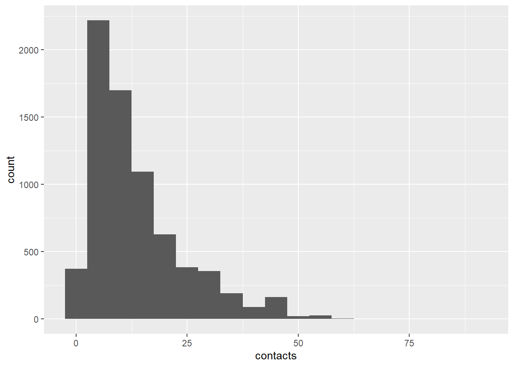

library(data.table)
d1 <- fread("2008_Mossong_POLYMOD_participant_common.csv")
d2 <- fread("2008_Mossong_POLYMOD_contact_common.csv")
library(dplyr)
# count the number of contacts for each participant using part_id variable
d2 |> group_by(part_id) |>
summarize(contacts = n()) -> d2_contacts
d12 <- left_join(d1, d2_contacts, by="part_id")
# add household information
d3 <- fread("2008_Mossong_POLYMOD_hh_common.csv")
d123 <- left_join(d12, d3, by="hh_id")
# add day of week information
d4 <- fread("2008_Mossong_POLYMOD_sday.csv")
dat <- left_join(d123, d4, by="part_id")This post describes my attempt to reproduce Table 1 of the paper, Social Contacts and Mixing Patterns Relevant to the Spread of Infectious Diseases. Data were downloaded from Social Contact Data, which was hosted in zenodo. I used the version 1.1. In summary, I wasn’t successful at reproducing the table exatly but still wanted to document the processes that I went through.
Data preparation
Data manipulation
Categorize the age group into different 10 age groups: 0-4, 5-9, 10-14, 15-19, and 20 to 70 by 10 years and 70 and above
classify_age <- function(d){
d$age_grp <- 99
for (i in 1:nrow(d)) {
if(!is.na(d$part_age[i])){
if(d$part_age[i] < 5){
d$age_grp[i] <- 0
}
else if (d$part_age[i] >= 5 && d$part_age[i] < 20){
for(j in 1:3){
if(d$part_age[i] >= 5*j && d$part_age[i] < (5*j+5)){
d$age_grp[i] <- j
}
}
}
else if (d$part_age[i] >= 20 && d$part_age[i] < 70){
for (k in 1:5){
if (d$part_age[i] >= (10+10*k) && d$part_age[i] < (20+10*k)){
d$age_grp[i] <- k+3
}
}
}
else {
d$age_grp[i] <- 9
}
}
}
d
}
dat <- classify_age(dat)library(ggplot2)
dat |> ggplot(aes(x=contacts)) +
geom_histogram(binwidth=5)
Compare the number of participants by age group (the third column)
dat |>
group_by(age_grp) |>
summarize(npart=n(),
avg_contacts = round(sum(contacts, na.rm=T) / npart, digits=2)) -> dat_ag
dat_ag$npart_true <- c(660,661,713,685,879,815,908,906,728,270,65)
dat_ag$avg_contacts_true <- c(10.21,14.81, 18.22,17.58,13.57,14.14,13.83,12.30,9.21,6.89,9.63)
dat_ag# A tibble: 11 × 5
age_grp npart avg_contacts npart_true avg_contacts_true
<dbl> <int> <dbl> <dbl> <dbl>
1 0 660 10.2 660 10.2
2 1 661 14.8 661 14.8
3 2 713 18.2 713 18.2
4 3 685 17.6 685 17.6
5 4 879 13.6 879 13.6
6 5 815 14.1 815 14.1
7 6 908 13.8 908 13.8
8 7 906 12.3 906 12.3
9 8 728 9.21 728 9.21
10 9 270 6.89 270 6.89
11 99 65 9.63 65 9.63Categorize the household size
classify_hh <- function(d){
d$hh_size_grp <- ifelse(d$hh_size > 4, 5, ifelse(!is.na(d$hh_size), d$hh_size, 99))
d
}
dat <- classify_hh(dat)Make categorical variables factor for regression
# set the categorical variables as factor for regression
dat$age_grp <- as.factor(dat$age_grp)
dat$hh_size_grp <- as.factor(dat$hh_size_grp)
dat$gender <- as.factor(dat$part_gender)
dat$dayofweek <- as.factor(dat$dayofweek)data for fitting only complete cases
dat_ <- dat
dat <- dat[complete.cases(dat),]
# set the maximum number of contacts 29
dat$contacts = ifelse(dat$contacts > 29, 29, dat$contacts)NegBin regression
Negative binomial regression was modeled using MASS::glm.nb function
library(MASS)
m1 <- glm.nb(contacts ~ age_grp, data = dat)
summary(m1)
Call:
glm.nb(formula = contacts ~ age_grp, data = dat, init.theta = 2.895747992,
link = log)
Coefficients:
Estimate Std. Error z value Pr(>|z|)
(Intercept) 2.30861 0.02626 87.919 < 2e-16 ***
age_grp1 0.32714 0.03648 8.967 < 2e-16 ***
age_grp2 0.49578 0.03556 13.943 < 2e-16 ***
age_grp3 0.46119 0.03600 12.812 < 2e-16 ***
age_grp4 0.24010 0.03442 6.975 3.05e-12 ***
age_grp5 0.28582 0.03483 8.206 2.29e-16 ***
age_grp6 0.24679 0.03418 7.220 5.21e-13 ***
age_grp7 0.14499 0.03429 4.228 2.35e-05 ***
age_grp8 -0.09882 0.03656 -2.703 0.00687 **
age_grp9 -0.36270 0.05032 -7.208 5.66e-13 ***
---
Signif. codes: 0 '***' 0.001 '**' 0.01 '*' 0.05 '.' 0.1 ' ' 1
(Dispersion parameter for Negative Binomial(2.8957) family taken to be 1)
Null deviance: 8055.6 on 7068 degrees of freedom
Residual deviance: 7390.5 on 7059 degrees of freedom
AIC: 47802
Number of Fisher Scoring iterations: 1
Theta: 2.8957
Std. Err.: 0.0597
2 x log-likelihood: -47780.1930 exp(m1$coefficients)(Intercept) age_grp1 age_grp2 age_grp3 age_grp4 age_grp5
10.0604651 1.3869981 1.6417727 1.5859529 1.2713769 1.3308557
age_grp6 age_grp7 age_grp8 age_grp9
1.2799167 1.1560315 0.9059023 0.6957929 m5 <- glm.nb(contacts ~ age_grp + gender + hh_size_grp + country + dayofweek, data = dat)
summary(m5)
Call:
glm.nb(formula = contacts ~ age_grp + gender + hh_size_grp +
country + dayofweek, data = dat, init.theta = 3.763576898,
link = log)
Coefficients:
Estimate Std. Error z value Pr(>|z|)
(Intercept) 1.75583 0.19669 8.927 < 2e-16 ***
age_grp1 0.30090 0.03321 9.060 < 2e-16 ***
age_grp2 0.45196 0.03238 13.956 < 2e-16 ***
age_grp3 0.44934 0.03271 13.738 < 2e-16 ***
age_grp4 0.31340 0.03190 9.824 < 2e-16 ***
age_grp5 0.31068 0.03213 9.668 < 2e-16 ***
age_grp6 0.27568 0.03146 8.763 < 2e-16 ***
age_grp7 0.21717 0.03260 6.661 2.72e-11 ***
age_grp8 0.03470 0.03617 0.959 0.337387
age_grp9 -0.19923 0.04890 -4.074 4.62e-05 ***
genderF -0.01755 0.19240 -0.091 0.927340
genderM -0.02768 0.19241 -0.144 0.885592
hh_size_grp2 0.09645 0.02827 3.412 0.000646 ***
hh_size_grp3 0.11854 0.02964 3.999 6.36e-05 ***
hh_size_grp4 0.22913 0.02979 7.692 1.45e-14 ***
hh_size_grp5 0.30497 0.03213 9.492 < 2e-16 ***
countryDE -0.31802 0.02839 -11.202 < 2e-16 ***
countryFI -0.01234 0.02921 -0.423 0.672627
countryGB 0.02936 0.02918 1.006 0.314328
countryIT 0.43331 0.02960 14.637 < 2e-16 ***
countryLU 0.28600 0.02862 9.994 < 2e-16 ***
countryNL 0.20892 0.04306 4.851 1.23e-06 ***
countryPL 0.25610 0.02860 8.956 < 2e-16 ***
dayofweek1 0.27813 0.02810 9.898 < 2e-16 ***
dayofweek2 0.32401 0.02758 11.747 < 2e-16 ***
dayofweek3 0.31329 0.02812 11.140 < 2e-16 ***
dayofweek4 0.31717 0.02774 11.434 < 2e-16 ***
dayofweek5 0.34216 0.02745 12.465 < 2e-16 ***
dayofweek6 0.14626 0.02887 5.066 4.07e-07 ***
---
Signif. codes: 0 '***' 0.001 '**' 0.01 '*' 0.05 '.' 0.1 ' ' 1
(Dispersion parameter for Negative Binomial(3.7636) family taken to be 1)
Null deviance: 9794.6 on 7068 degrees of freedom
Residual deviance: 7372.6 on 7040 degrees of freedom
AIC: 46396
Number of Fisher Scoring iterations: 1
Theta: 3.7636
Std. Err.: 0.0843
2 x log-likelihood: -46336.2000 exp(m5$coefficients) (Intercept) age_grp1 age_grp2 age_grp3 age_grp4 age_grp5
5.7882277 1.3510687 1.5713835 1.5672725 1.3680647 1.3643573
age_grp6 age_grp7 age_grp8 age_grp9 genderF genderM
1.3174272 1.2425566 1.0353045 0.8193574 0.9826079 0.9726948
hh_size_grp2 hh_size_grp3 hh_size_grp4 hh_size_grp5 countryDE countryFI
1.1012549 1.1258570 1.2575100 1.3565872 0.7275872 0.9877342
countryGB countryIT countryLU countryNL countryPL dayofweek1
1.0297905 1.5423491 1.3310865 1.2323420 1.2918884 1.3206527
dayofweek2 dayofweek3 dayofweek4 dayofweek5 dayofweek6
1.3826643 1.3679193 1.3732405 1.4079890 1.1575004